Campaign Zone Rewards
Act 1
| Zone | Reward |
|---|---|
| Cemetery of the Eternals | Regal Orb |
| Hunting Grounds | Exalted Orb |
| Ogham Village | Artificer's Orb |
| The Manor Ramparts | Uncut Skill Gem (Level 5) |
| Ogham Manor | Orb of Alchemy |
Act 2
| Zone | Reward |
|---|---|
| Vastiri Outskirts | Exalted Orb |
| Vastiri Outskirts | Uncut Support Gem (Level 2) |
| The Halani Gates | Exalted Orb |
| Mawdun Quarry | Uncut Spirit Gem (Level 5) |
| The Lost City | Orb of Alchemy |
| Buried Shrines | Lesser Jeweller's Orb |
| Mastodon Badlands | Regal Orb |
| The Bone Pits | Exalted Orb |
Act 3
| Zone | Reward |
|---|---|
| Sandswept Marsh Quest | Lesser Jeweller's Orb |
| Jungle Ruins | Orb of Alchemy |
| Infested Barrens | Exalted Orb |
| Jiquani's Sanctum | Exalted Orb |
| The Drowned City | Uncut Support Gem (Level 3) |
| Temple of Kopec | Uncut Spirit Gem (Level 11) |
Act 4
| Zone | Reward |
|---|---|
| Kedge Bay | Exalted Orb |
| Journey's End | Orb of Alchemy |
| Volcanic Warrens | Uncut Support Gem (Level 4) |
| Shrike Island | Uncut Support Gem (Level 4) |
| Abandoned Prison | Exalted Orb |
| Eye of Hinekora | Chaos Orb |
| Ngakanu | Greater Jeweller's Orb |
Interludes
| Act | Zone | Reward |
|---|---|---|
| 1 | Scorched Farmlands | Uncut Support Gem (Level 4) |
| 1 | Stones of Serle | Exalted Orb |
| 2 | Pools of Khatal | Orb of Alchemy |
| Qimah | Exalted Orb | |
| 3 | Howling Caves | Chaos Orb |
| Etched Ravine | Exalted Orb |
Lightning Damage to Attacks — Tier Cutoffs
Attack Speed — Tier Cutoffs
| Icon | Skill | Supports |
|---|---|---|
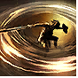 |
Whirling Slash WS 1 | Rage I, IV, V - Rapid Attacks I, IV, V - Knockback III - Magnified Area I, III - Punch Through III - Heightened Accuracy III - Rigwalds Ferocity |
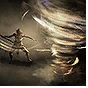 |
Twister WS 2 | Retreat I, III, V - Projectile Acceleration I, IV, V [if extra] - Frost Nexus II, S - Elemental Armament I, II - Conc Area I - Ice Bite I, III - Longshot II, III - Close Combat III, V - Pinpoint Critical II - Rakiata - Garukhan's Resolve |
Frost Bomb I, D |
Magnified Area I, D |
|
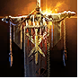 |
War Banner IV |
Prolonged Duration I, III - Magnified Area I, III - Efficiency I, IV [optional] - Life Tap II [optional] |
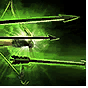 |
Barrage V WS 1 |
Rapid Casting I, IV - Cooldown Recovery III, IV - Prolonged Duration I, III, D - Life Tap II - Second Wind II, IV, V - Heightened Charges II |
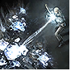 |
Ice-Tipped Arrows V WS 2 |
Elemental Armament I, II - Magnified Area I, D - Cooldown Recovery III, IV, D - Elemental Focus III - Second Wind II, IV, V - Culling Strike IV, V - Cold Exposure IV |
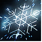 |
Freezing Mark VII WS 1 |
Prolonged Duration I, III - Charged Mark V - Mark of Siphoning I, IV - Mark for Death II, IV - Efficiency I, IV - Life Tap II |
Herald of Ice VIII WS 2 |
Elemental Armament I, II - Cold-Attunement I, D - Frost Nexus II - Magnified Area I, III, D - Freeze II - Embitter II - Cold Mastery V, D - Diala's Desire |
|
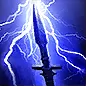 |
Herald of Thunder IV |
Elemental Armament I, II - Conc Area I - Long Shot - Maim II - Living Lightning II, IV - Elemental Focus III - Oisin's Oath |
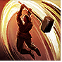 |
Thunderous Leap VII WS 1 |
Rapid Attacks I, IV, V |
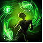 |
Combat Frenzy VIII |
Charged Profusion I - Empowered Sparks II, IV - Cannibalism III, IV [if spirit on item] - Herbalism II, IV |
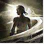 |
Wind Dancer WS 1 | Magnified Area I, III - Blind II, V - Knockback III - Pin I, II - Heightened Accuracy III - Maim II |
Gem Cutting Priority
| Gem | Skill |
|---|---|
| Tier 2 | |
| Frost Nexus | Twister |
| Elemental Armament II | Twister |
| Elemental Armament II | Herald of Ice |
| Elemental Armament II | Twister |
| Elemental Focus | Ice-Tipped Arrows |
| Tier 3 | |
| Retreat II | Twister |
| Elemental Focus | Ice-Tipped Arrows |
| Cooldown Recovery I | Barrage |
| Tier 4 | |
| Rapid Attacks II | Whirling Slash |
| Rage II | Whirling Slash |
| Cooldown Recovery II | Ice-Tipped Arrows |
| Cooldown Recovery II | Barrage |
| Tier 5 | |
| Charged Mark | Freezing Mark |
| Projectile Acceleration III | Twister |
| Rage III | Whirling Slash |
| Rapid Attacks III | Whirling Slash |
| Rapid Attacks III | Thunderous Leap |
Quest Choices
| Quest | Choice |
|---|---|
| Valley of the Titans | +1 Charm, 30% Charge Generation (Left) |
| Venom Crypts Vial | 25% increased Stun Threshold |
| Abandoned Prison Chapel | 30% increased recovery from Life Flasks |
| Halls of the Dead Totems | +5 to Str, Dex, and Int |
| Qimah The Seven Pillars | 15% Global Defences OR +5% Elemental Res OR 12% Cooldown Recovery |
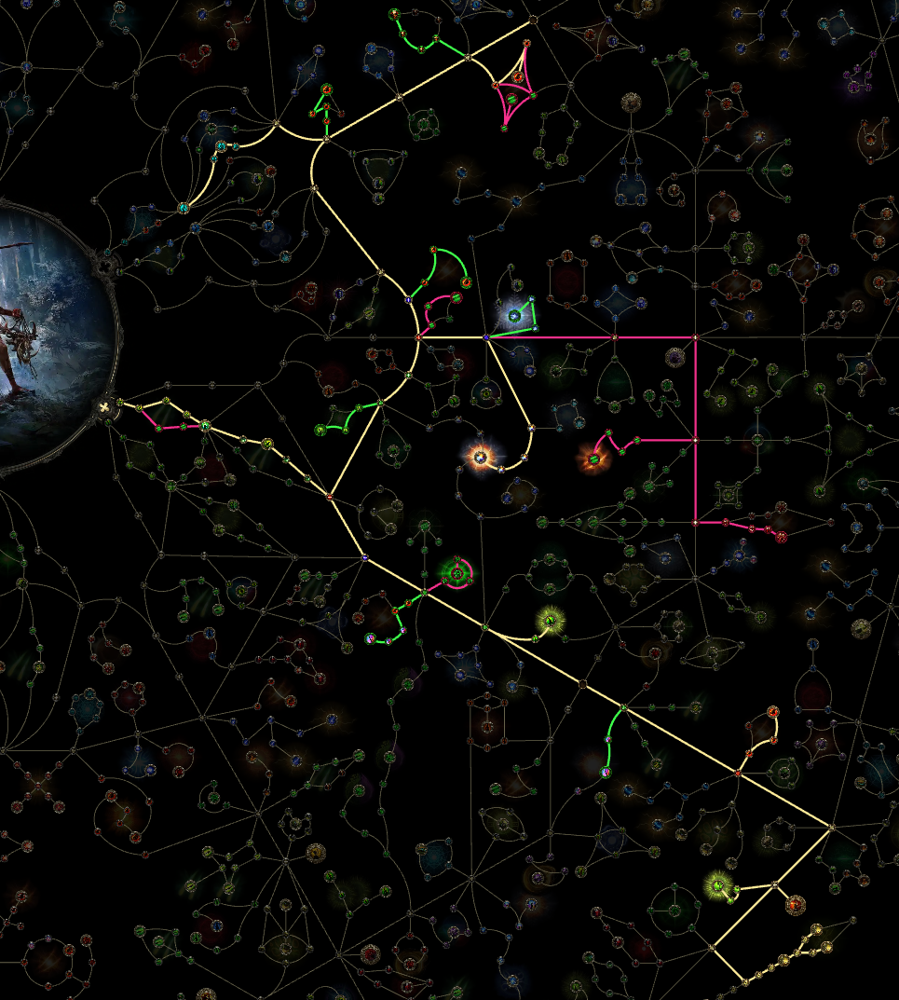
■ WS 1 · ■ WS 2
Spark-Comet - Modifier Tier Cutoffs
Gain % of Damage as Extra Lightning Damage
+ to Level of all Spell Skills
+ to Level of all Fire Spell Skills
The same cutoffs apply to Cold and Lightning Spell Skills.
Spark-Comet - Gem Priorities
| Gem | Skill |
|---|---|
| Unleash | Spark [2] |
| Rapid Casting I | Spark [1] [3] |
| Overabundance I | Orb of Storms [1] |
| Controlled Destruction | Orb of Storms [2] |
| Prolonged Duration I | Frost Bomb [1] |
| Controlled Destruction | Arctic Armour [1] |
| Gem | Skill |
|---|---|
| Short Fuse I | Frost Bomb [2] |
| Considered Casting | Orb of Storms [2] [3] |
| Unleash | Orb of Storms [2] [after orb limit node] |
| Potent Exposure | Frost Bomb [3] |
| Fortress I | Flame Wall [1] |
| Freeze | Arctic Armour [2] |
| Spell Cascade | Flame Wall [2] |
| Spell Echo | Frost Bomb [3] [alternative] |
| Gem | Skill |
|---|---|
| Pierce II | Spark [1] |
| Prolonged Duration II | Frost Bomb [1] |
| Efficiency | Mana Tempest [1] |
| Harmonic Remnants II | Siphon Elements [1] |
| Fortress II | Flame Wall [1] |
| Prolonged Duration II | Flame Wall [3] |
| Cooldown Recovery I | Mana Tempest [2] |
| Gem | Skill |
|---|---|
| Projectile Acceleration II | Spark [3] |
| Short Fuse II | Frost Bomb [2] |
| Rising Tempest | Spark [4] |
| Efficiency II | Mana Tempest [1] |
| Cooldown Recovery II | Mana Tempest [2] |
| Second Wind II | Mana Tempest [3] |
| Cooldown Recovery II | Frost Bomb [4] |
| Cooldown Recovery II | Arctic Armour [4] |
| Gem | Skill |
|---|---|
| Pierce III | Spark [1] |
| Projectile Acceleration III | Spark [3] |
| Cold Mastery | Siphon Elements [2] |
| Second Wind III | Mana Tempest [3] |
| Lightning Mastery | Mana Tempest [4] |
| Chain III | Orb of Storms [4] |
| Cold Mastery | Elemental Conflux [1] |
| Harmonic Remnants I | Mana Remnants [1] |
| Remnant Potency I | Mana Remnants [2] |
| Remnant Potency II | Mana Remnants [2] |
| Remnant Potency III | Mana Remnants [2] |
| Harmonic Remnants II | Mana Remnants [1] |
| Pinpoint Critical | Spark [5] |
| Unleash | Comet [1] |
| Considered Casting | Comet [5] |
| Spell Echo | Comet [2] |
| Ambrosia II | Comet [4] |
| Pinpoint Critical | Comet [3] |
| Execute II | Comet [3] |
| Spell Cascade | Cast on Elemental Ailment [2] |
| Spell Cascade | Cast on Critical [2] |
| Boundless Energy I | Cast on Elemental Ailment [5] |
| Boundless Energy I | Cast on Critical [5] |
| Energy Retention | Cast on Elemental Ailment [4] |
| Energy Retention | Cast on Critical [4] |
| Boundless Energy II | Cast on Elemental Ailment [5] |
| Boundless Energy II | Cast on Critical [5] |
| Pinpoint Critical | Cast on Elemental Ailment [3] |
| Pinpoint Critical | Cast on Critical [3] |
| Comet | Cast on Elemental Ailment [1] |
| Comet | Cast on Critical [1] |
| Mobility | Mana Tempest [5] |
| Knockback | Arctic Armour [3] |
| Deliberation | Orb of Storms [5] |
| Pinpoint Critical | Orb of Storms [5] |
| Heightened Curse | Elemental Weakness [1] |
| Prolonged Duration I | Elemental Weakness [2] |
| Efficiency | Elemental Weakness [3] |
| Prolonged Duration II | Convalescence [1] |
| Cooldown Recovery I | Convalescence [2] |
| Second Wind III | Convalescence [3] |
| Zenith II | Spark [4] |
| Prolonged Duration II | Spark [4] |
| Gem |
|---|
| Spark |
| Orb of Storms |
| Frost Bomb |
| Comet |
| Flame Wall |
| Arctic Armour |
| Mana Tempest |
| Mana Remnants |
| Gem |
|---|
| Spark |
| Orb of Storms |
| Elemental Conflux |
| Arctic Armour |
| Frost Bomb |
| Mana Remnants |
| Comet |
| Mana Tempest |
| Siphon Elements |
| Cast on Elemental Ailment |
| Cast on Critical |
| Gem |
|---|
| Spark |
| Orb of Storms |
| Frost Bomb |
| Comet |
| Arctic Armour |
| Cast on Elemental Ailment |
| Cast on Critical |
| Mana Tempest |
| Gem |
|---|
| Spark |
| Frost Bomb |
| Comet |
| Cast on Elemental Ailment |
| Cast on Critical |
| Orb of Storms |
| Arctic Armour |
| Gem | Skill |
|---|---|
| Zarokh's Refrain [drop / trade] | Comet [2] |
| Vilenta's Propulsion [drop / trade] | Spark [3] |
| Ixchel's Torment [drop / trade] | Cast on Elemental Ailment [2] |
| Arbiter's Ignition [drop / trade] | Cast on Critical [2] |
| Uhtred's Exodus [drop / trade] | Elemental Conflux [1] |
| Uhtred's Rite [drop / trade] | Frost Bomb [5] |
| Dominus' Grasp [drop / trade] | Orb of Storms [4] |
| Khatal's Rejuvenation [drop / trade] | Mana Remnants [3] |
| Uhtred's Omen [drop / trade] | Siphon Elements [2] |
| Breachlord's Rift [drop / trade] | Arctic Armour [5] |
| Trickster's Shard [drop / trade] | Spark [2] |
Spark-Comet - Gems and Supports
Supports are grouped by slot to match the priority and Lineage tables above. A slash separates alternatives or upgrades for the same slot, not gems to equip together. Lineage gems are drop / trade only.
| Icon | Skill | Supports |
|---|---|---|
| Galvanic Field | Chain [tiers I, II, III] - Bounty [tiers I, II] - Overabundance [tiers I, II] - Momentum - Mobility [cutting levels not specified] | |
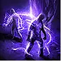 |
Contagion | |
| Spark |
[1] Rapid Casting I / Pierce II / Pierce III[2] Unleash / Trickster's Shard[3] Rapid Casting I / Projectile Acceleration II / Projectile Acceleration III / Vilenta's Propulsion[4] Rising Tempest / Zenith II / Prolonged Duration II[5] Pinpoint Critical |
|
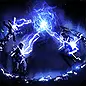 |
Orb of Storms |
[1] Overabundance I[2] Controlled Destruction / Considered Casting / Unleash [after orb limit node][3] Considered Casting[4] Chain III / Dominus' Grasp[5] Deliberation / Pinpoint Critical |
| Frost Bomb |
[1] Prolonged Duration I / Prolonged Duration II[2] Short Fuse I / Short Fuse II[3] Potent Exposure / Spell Echo[4] Cooldown Recovery II[5] Uhtred's Rite |
|
 |
Pounce III |
|
| Flame Wall |
[1] Fortress I / Fortress II[2] Spell Cascade[3] Prolonged Duration II |
|
Mana Remnants IV |
[1] Harmonic Remnants I / Harmonic Remnants II[2] Remnant Potency I / Remnant Potency II / Remnant Potency III[3] Khatal's Rejuvenation |
|
Arctic Armour IV |
[1] Controlled Destruction[2] Freeze[3] Knockback[4] Cooldown Recovery II[5] Breachlord's Rift |
|
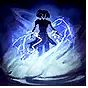 |
Mana Tempest VII |
[1] Efficiency / Efficiency II[2] Cooldown Recovery I / Cooldown Recovery II[3] Second Wind II / Second Wind III[4] Lightning Mastery[5] Mobility |
 |
Elemental Weakness VII |
[1] Heightened Curse[2] Prolonged Duration I[3] Efficiency |
 |
Convalescence IV |
[1] Prolonged Duration II[2] Cooldown Recovery I[3] Second Wind III |
Siphon Elements VIII |
[1] Harmonic Remnants II[2] Cold Mastery / Uhtred's Omen |
|
Comet XI |
[1] Unleash[2] Spell Echo / Zarokh's Refrain[3] Pinpoint Critical / Execute II[4] Ambrosia II [once mana flask has 100+ charges][5] Considered Casting |
|
Elemental Conflux XIV |
[1] Cold Mastery / Uhtred's Exodus |
|
Cast on Elemental Ailment XIV [100 Spirit; before crit swap] |
[1] Comet [triggered skill][2] Spell Cascade / Ixchel's Torment[3] Pinpoint Critical[4] Energy Retention[5] Boundless Energy I / Boundless Energy II |
|
Cast on Critical XIV [+90 Spirit; replaces Cast on Elemental Ailment after crit swap] |
[1] Comet [triggered skill][2] Spell Cascade / Arbiter's Ignition[3] Pinpoint Critical[4] Energy Retention[5] Boundless Energy I / Boundless Energy II |
Quest Choices
| Quest | Choice |
|---|---|
| Valley of the Titans | +1 Charm, 30% Charge Generation (Left) |
| Venom Crypts Vial | Elemental Ailment Threshold |
| Abandoned Prison Chapel | Mana Flask Recovery |
| Halls of the Dead Totems | +5% to Fire, Cold, and Lightning Resistances |
| Qimah The Seven Pillars | +5% to all Elemental Resistances |
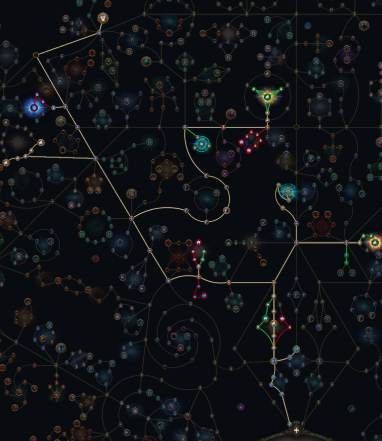
Sand Djinn - Modifier Tier Cutoffs
Sceptres - + to Level of all Minion Skills
Helmets - + to Level of all Minion Skills
Sand Djinn - Gem Cutting Priorities
Follow each tier top to bottom, skipping unavailable or retired skills. A row with several destinations means move that support, not cut all copies. Source-explicit opening / reward order is preserved; spare utility and minion copies follow the source skill-list order. Slot numbers are our presentation, and slash-separated supports replace one another.
| Gem | Skill |
|---|---|
| Unleash | Spark [1] / Firebolt [1] / Chaos Bolt [1] / Contagion [1] [move the same gem] |
| Zenith I | Essence Drain [1] / Ember Fusillade [2] [clear / boss swap] |
| Chain I | Essence Drain [2] |
| Controlled Destruction | Ember Fusillade [1] [prepare for level 14] |
| Magnified Area I | Kelari's Deception [2] [clear] |
| Concentrated Area | Kelari's Deception [2] [boss swap] |
| Prolonged Duration I | Pounce [2] [spare after core links] |
| Last Gasp | Skeletal Sniper [1] [spare; Spirit permitting] |
| Last Gasp | Skeletal Arsonist [1] [spare; Spirit permitting] |
| Last Gasp | Skeletal Frost Mage [1] [spare; Spirit permitting] |
| Last Gasp | Bind Spectre [1] [spare; Spirit permitting] |
| Last Gasp | Skeletal Reaver [1] [spare; Spirit permitting] |
| Last Gasp | Skeletal Storm Mage [1] [spare; Spirit permitting] |
| Last Gasp | Skeletal Brute [1] [spare; Spirit permitting] |
| Gem | Skill |
|---|---|
| Bidding I | Kelari's Deception [1] [first ascendancy] |
| Mark for Death | Pounce [1] |
| Living Lightning | Thunderstorm [1] |
| Gem | Skill |
|---|---|
| Magnified Area II | Kelari's Deception [2] [Act 3 upgrade] |
| Muster | Kelari's Deception [3] [level 36 / third socket] |
| Prolonged Duration II | Pounce [2] [spare upgrade] |
| Prolonged Duration II | Thunderstorm [2] [spare utility] |
| Magnified Area II | Thunderstorm [3] [third ordinary socket] |
| Gem | Skill |
|---|---|
| Bidding II | Kelari's Deception [1] [Act 4 upgrade] |
| Skill |
|---|
| Thunderstorm |
Sand Djinn - Gems and Supports
Endgame comparison: shortlisted for an SSF / minimal-trade league-start path toward Arbiter of Divinity under 0.5.5. These are sourced gem setups, not independently verified kills of that boss with these exact links or budgets. Start with the SSF entry setup; the other selectors show progression options, not required purchases.
Sources checked 14 October 2026. Endgame supports below belong to the parent Djinn (Kelari / Ruzhan / Navira); command skills share those links and are not separate six-links. Each row is one skill's setup; alternatives share a numbered slot. Endgame slot numbers follow the source's listed order, not campaign cutting priorities. Support colors follow attribute requirements; gold names are drop / trade-only Lineage supports. Endgame setups are separate from the campaign priorities and downloadable snapshots.
Numbered slots match the cutting table. Earlier support ranks remain useful until you find an upgrade. The table shows the intended progression: 14-18 spells, 19+ Djinn after the trial. All three downloadable snapshots show every included skill and support at character levels 1-100, even before a gem is usable. Their names describe the intended stage, not visibility filters: manually choose the spell snapshot until the trial is complete, then the Djinn swap snapshot, then the later campaign snapshot. Recommendations are preparation targets, not guaranteed unlocks, rewards or available sockets.
| Icon | Skill | Supports |
|---|---|---|
 |
Spark Levels 1-5 |
[1] UnleashOpening clear. At level 6, replace with Essence Drain. Move Unleash between this and the weapon spell for bossing. |
 |
Firebolt Levels 1-13; weapon-granted |
[1] UnleashWeapon-granted option, not a normal skill-gem cut. Use a strong available weapon spell for early bosses; Chaos Bolt becomes the default fallback after the Rust King. |
 |
Frost Bomb Levels 1-5 |
No supports specified.
Opening utility from Renly. Not part of the later stage-specific skill lists; no support investment. |
 |
Contagion Levels 1-18 |
[1] UnleashClearfell skill reward. From level 6, use with Essence Drain and move Unleash here for clear. Do not spend skill-gem upgrades on it. |
 |
Chaos Bolt Levels 6-13; weapon-granted |
[1] UnleashWeapon-granted by a Withered Wand; not a normal skill-gem cut. Boss option with Unleash. Strong Firebolt / Lightning Bolt / Freezing Shards weapons are alternatives. |
 |
Essence Drain Pre-cut before 6; use at levels 6-18 |
[1] Zenith I[2] Chain IShown in our build's recommendations from level 1 for pre-cutting when a suitable uncut gem is available. Equip from level 6 for main clear with Contagion. Upgrade ahead of Orb of Storms. From level 14, move the same Zenith I between ED for clear and Ember Fusillade for bosses. |
|
Pounce Levels 6-100 |
[1] Mark for Death[2] Prolonged Duration I / Prolonged Duration IICut from Lachlann reward; wolf talisman on weapon set 2. Do not spend gem upgrades on Pounce. At the Djinn swap add Mark for Death and duration. Meta gem: socket manually if the planner does not display it. |
 |
Arctic Armour Levels 10-18 |
No supports specified.
Early Spirit skill in the ED / Ember stages. Retire at the Djinn swap to make room for reviving minions. |
 |
Orb of Storms Levels 14-18 |
No supports specified.
Prepare with the Crowbell reward, use in the Ember stage. Upgrade after Essence Drain. The level 14-19 skill list assigns no supports, so none are added here. |
 |
Ember Fusillade Levels 14-18 |
[1] Controlled Destruction[2] Zenith ICut with the Leitis level 5 skill gem. Single target with Controlled Destruction and the Zenith I moved from Essence Drain. |
 |
Thunderstorm Levels 14-100 |
[1] Living Lightning[2] Prolonged Duration II[3] Magnified Area IICut from Vastiri Outskirts completion when available. KEEP GEM LEVEL 5: further levels increase attribute requirements without benefiting this utility setup. From the Djinn swap, use Living Lightning; later add duration and area with spare gems/sockets. |
 |
Kelari's Deception Levels 19-100; ascendancy-granted |
[1] Bidding I / Bidding II[2] Magnified Area I / Concentrated Area / Magnified Area II[3] MusterFIRST ASCENDANCY REQUIRED: level 19 is GuyThatDies's swap checkpoint, not an automatic unlock. Granted by the Kelari ascendancy setup, not cut. [1] Bidding; [2] Magnified Area for clear OR Concentrated Area for bosses; [3] Muster at level 36 once the socket is available. No second Fire Djinn is prescribed by this campaign guide. |
 |
Skeletal Sniper Levels 19-100 |
[1] Last GaspFirst reviving minion at the swap. Last Gasp is a spare T1 investment. Level minion gems as useful; reserve Spirit for different active types once Muster is available. |
 |
Skeletal Arsonist Levels 20-100 |
[1] Last GaspAdd one if Spirit permits in the post-swap roster. Different active reviving types increase Muster damage; duplicates of one type do not add another type. |
 |
Skeletal Frost Mage Levels 20-100 |
[1] Last GaspAdd one if Spirit permits. Campaign roster option, not a requirement to reserve every listed minion immediately. |
 |
Bind Spectre Levels 22-100 |
[1] Last GaspUse the cheap wasp in Sandswept Marsh recommended by GuyThatDies. It adds a reviving minion type for Muster; no Powered Zealot farming or projectile-spell supports in this route. The gem unlock and reaching the zone are separate gates. |
 |
Skeletal Reaver Levels 31-100 |
[1] Last GaspAnother reviving type when a level 9 skill gem and sufficient Spirit are available. |
 |
Skeletal Storm Mage Levels 41-100 |
[1] Last GaspAnother reviving type when a level 11 skill gem and sufficient Spirit are available. |
 |
Skeletal Brute Levels 52-100 |
[1] Last GaspAnother reviving type when a level 13 skill gem and sufficient Spirit are available. |
BlazeworksTV - Sand + Fire / SSF entry
Source: Early Endgame (65-85) · 0.5.5 HC / SSF guide. Best starting comparison here: this snapshot has no Lineage supports. It is an entry-to-endgame setup, not a claim that level 65 gear is enough for Arbiter.
| Icon | Skill | Supports |
|---|---|---|
 |
Kelari, the Tainted Sands Deception / Brutality |
[1] Bidding II[2] Muster[3] Magnified Area II[4] Heft |
 |
Ruzhan, the Blazing Sword Trap / Brand |
[1] Bidding II[2] Muster[3] Concentrated Area[4] Fire Penetration II |
 |
Pain Offering | [1] Magnified Area II[2] Prolonged Duration II |
 |
Wolf Pack | [1] Loyalty[2] Last Gasp[3] Meat Shield II |
|
Skeletal Sniper | [1] Last Gasp[2] Rapid Attacks II[3] Minion Mastery |
 |
Skeletal Warrior | [1] Last Gasp[2] Meat Shield II[3] Minion Mastery |
|
Skeletal Reaver | [1] Last Gasp[2] Meat Shield II[3] Minion Mastery |
 |
Skeletal Cleric | [1] Last Gasp[2] Meat Shield II[3] Minion Mastery |
|
Skeletal Storm Mage | [1] Last Gasp[2] Rapid Casting II[3] Shock |
|
Bind Spectre Powered Zealot |
[1] Wildshards II[2] Pierce II[3] Shock[4] Projectile Acceleration III |
|
Convalescence | [1] Prolonged Duration II[2] Second Wind III[3] Cooldown Recovery II |
Crucial: use one of each listed minion type for Muster, within your Spirit budget. The spectre is the lightning-projectile Powered Zealot from Etched Ravine, not an arbitrary spectre. The source drops Pounce / Thunderstorm only after anointing Splintering Force; until then retain their campaign utility. Its CI transition also requires enough Spirit for Convalescence on both weapon sets. Do not copy CI before your ES gear is ready.
Bossing: wait for Archon of Undeath, apply Pain Offering and Kelari's Brutality, then chain Deception. The author's later stages add Lineage gems and Dominion; those are not included in this budget snapshot.
ds_lily - Kelari carry / triple Djinn with Dominion
Source: Triple Djinn w/ Dominion Anoint (main setup) · 0.5.5 endgame guide. A progression target once you can obtain the anoint, rather than an immediate league-start swap. Navira and Ruzhan are utility here; Kelari remains the main damage source.
| Icon | Skill | Supports |
|---|---|---|
|
Kelari, the Tainted Sands Deception / Brutality |
[1] Muster[2] Bidding III[3] Hulking Minions[4] Magnified Area II [clear] / Concentrated Area [boss swap][5] Kurgal's Leash / Execute II [SSF substitution from author] |
 |
Navira, the Last Mirage | [1] Prolonged Duration II[2] Rapid Casting II[3] Bidding III |
|
Ruzhan, the Blazing Sword | [1] Efficiency II |
|
Bind Spectre Powered Zealot |
[1] Muster[2] Wildshards II[3] Pierce III[4] Overcharge[5] Tecrod's Revenge |
|
Skeletal Arsonist | [1] Armour Break III[2] Armour Demolisher II[3] Last Gasp |
|
Skeletal Reaver | [1] Armour Break III[2] Armour Demolisher II[3] Last Gasp |
|
Skeletal Sniper | [1] Armour Break III[2] Armour Demolisher II[3] Last Gasp |
|
Skeletal Brute | [1] Armour Break III[2] Armour Demolisher II[3] Last Gasp |
|
Skeletal Warrior | [1] Armour Break III[2] Armour Demolisher II[3] Last Gasp |
|
Skeletal Storm Mage | [1] Shock[2] Overcharge[3] Muster |
|
Skeletal Cleric | [1] Rapid Casting II[2] Last Gasp[3] Meat Shield II |
|
Skeletal Frost Mage | [1] Last Gasp[2] Feeding Frenzy II[3] Muster |
 |
Refutation | [1] Prolonged Duration II[2] Cooldown Recovery II[3] Rapid Casting II |
Crucial: Dominion is the gate for the advertised continuous Archon / Deception playstyle. It uses Potent Liquid Contempt + Concentrated Liquid Suffering + Concentrated Liquid Isolation, not Ancient emotions. Without it, use the source's Fire/Sand Pre Dominion variant rather than assuming permanent uptime. Use Ruzhan's Brand to trigger Archon when needed; keep casting Kelari's Brutality for Critical Weakness and to activate Kurgal's Leash if equipped.
SSF / low-trade: the author explicitly offers Execute II instead of Kurgal's Leash. Tecrod's Revenge is still a Lineage drop in the displayed spectre setup; do not treat this exact five-support spectre as a guaranteed league-start loadout. Use one of each minion; Powered Zealot is the Spark variant from Etched Ravine. The author allows replacing a skeleton with Convalescence for recovery. Unspec Heavy Buffer when switching to CI. Expensive showcased gear such as Mageblood is not a purchase requirement here; follow the source's rare-gear alternatives.
PhazePlays - Sandscorcher / Sand + Fire damage
Source: Sandscorcher · titled 0.5, currently tagged 0.5.5 / SSF / HC. A more invested comparison: its displayed Kelari links require two Lineage drops. The author claims league-start all-content capability; that is not independent proof of an Arbiter of Divinity kill on this exact budget.
| Icon | Skill | Supports |
|---|---|---|
|
Kelari, the Tainted Sands Deception / Brutality |
[1] Bidding II[2] Muster[3] Hulking Minions[4] Kurgal's Leash[5] Vorana's Siege |
|
Ruzhan, the Blazing Sword Trap / Brand |
[1] Bidding III[2] Muster[3] Long Fuse II[4] Hulking Minions[5] Magnified Area II |
|
Skeletal Reaver | [1] Fire Attunement[2] Muster[3] Feeding Frenzy II[4] Minion Splash II[5] Armour Break III |
|
Skeletal Storm Mage | [1] Shock[2] Overcharge[3] Muster[4] Feeding Frenzy II[5] Lightning Attunement |
|
Bind Spectre Powered Zealot |
[1] Muster[2] Pierce III[3] Feeding Frenzy II[4] Wildshards II[5] Projectile Acceleration II |
|
Skeletal Sniper | [1] Muster[2] Feeding Frenzy II[3] Multishot II[4] Heft[5] Armour Break III |
|
Skeletal Frost Mage | [1] Rapid Casting II[2] Muster[3] Cold Attunement[4] Multishot II[5] Concentrated Area |
|
Skeletal Arsonist | [1] Fire Attunement[2] Muster[3] Multishot II[4] Feeding Frenzy II[5] Heft |
|
Skeletal Cleric | [1] Brutus' Brain[2] Rapid Casting II[3] Minion Mastery |
|
Elemental Weakness | [1] Heightened Curse[2] Efficiency II[3] Focused Curse[4] Magnified Area II[5] Cursed Ground |
| Frost Bomb | [1] Potent Exposure[2] Overabundance I[3] Spell Echo[4] Cooldown Recovery II[5] Magnified Area II |
|
|
Skeletal Warrior | [1] Culling Strike II[2] Hulking Minions[3] Muster[4] Armour Break III |
Crucial: one of each minion, but two Clerics; spare Spirit goes to spectres. Use the Spark Powered Zealot from Etched Ravine. This version adds curse / exposure buttons for bossing. The guide reports Ruzhan's triggered exposure overriding Frost Bomb's stronger exposure and advises placing Frost Bomb slightly away from the boss so Ruzhan's attack misses; treat this as a source-reported, patch-sensitive caveat.
SSF / low-trade: Kurgal's Leash and Vorana's Siege are acquisition gates for these exact main links, not ordinary gem cuts; stay with the SSF entry links while farming. Brutus' Brain on Cleric is also a later upgrade. Preserve reliable armour break: the author recommends Armour Break III on Kelari early, then Splintering Force, and only later Dominion with another armour-break source. Do not assume the listed skeleton links fully replace Kelari's instant armour break. Uul-Netol's Embrace is an expensive alternative, not a league-start requirement.
Sand Djinn - GuyThatDies Campaign Progression
| Checkpoint | Skills / next action | Important gate |
|---|---|---|
| Levels 1-5 | Spark for opening clear; Firebolt or a strong weapon spell for bosses. Cut Frost Bomb from Renly and Contagion from Clearfell. Pre-cut Essence Drain for level 6 when a suitable uncut gem is available. Move Unleash between clear and boss skills. | Firebolt / Chaos Bolt are weapon-granted. After the Rust King, buy a Withered Wand for Chaos Bolt if you have no stronger +level weapon. |
| Levels 6-13 | Replace Spark with Essence Drain + Contagion. ED gets Zenith I / Chain I; move Unleash onto Contagion for clear or onto your weapon spell for bosses. Cut Pounce from Lachlann and prepare Orb of Storms from Crowbell. | Upgrade ED before Orb of Storms. Do not spend upgrades on Contagion or Pounce. Add Arctic Armour at 10 if Spirit permits. |
| Level 14 to first trial | Cut Ember Fusillade from Leitis for single target with Controlled Destruction. Move Zenith I from ED to Ember for bosses and back for clear. Use the prepared Orb of Storms. | Save the Executioner / Gallows support rewards for Magnified Area I and Concentrated Area at the Djinn swap. These are alternatives in one slot. |
| Act 2, first ascendancy around 19 | Swap to Kelari / Deception, Pounce, Thunderstorm and Skeletal Sniper. Follow the author's swap tree, equip sceptre + shield and prioritize +1 minion level on sceptre / helmet. | Complete the trial first, then manually select the level-19 snapshot. If delayed past 19, keep the spell snapshot selected until ready; its gem recommendations remain visible at all levels. |
| After the swap | Bidding I goes in Deception [1]. Use Magnified Area I in [2] for clear or Concentrated Area for bosses. Pounce uses Mark for Death / duration; Thunderstorm uses Living Lightning. | Keep Thunderstorm at gem level 5. Pounce needs the wolf talisman on weapon swap. Retire Arctic Armour to free Spirit for the new roster. |
| Act 3 / level 36 | Source T3 order: Magnified Area II from the Sandswept Marsh league reward, then Muster from the Venom Crypts sarcophagus. Add Muster in Deception [3] at 36, once the socket is unlocked. | Use a cheap Sandswept Marsh wasp for Bind Spectre. Muster counts different active reviving types, not repeated copies of one type. A league reward may differ outside this event. |
| Act 4 / interludes | Take Bidding II from Isle of Kin's Beast Pen. Add different minion types as skill gems and Spirit allow: Sniper, Arsonist, Frost Mage, Spectre, Reaver, Storm Mage and Brute. | Don't try to reserve the whole roster before you can afford it. Thunderstorm's extra duration / area links are spare-gem utility, not a reason to delay core damage. |
| Passive routing / campaign exit | Use the author's target trees included in our three snapshots. The later guide routes through Bringer of Order, then Pure Energy / Dampening Shield, then Heavy Buffer, refunding the superseded travel attributes. | No Fire Djinn, Pain Offering, Powered Zealot farming or Lineage shopping is added to this campaign setup. Choose an endgame transition separately. |
Sand Djinn - Scaling and Gear Checks
Before ascendancy: Caster weapon / focus
Source priority: useful skill levels, damage gained as extra, increased damage, cast speed, then critical stats. Check whether the modifier actually affects the spell you're using; do not assume elemental levels help Essence Drain.
After ascendancy: Minion levels
Prioritize +minion levels on sceptre / helmet, then nearby-allies damage and critical modifiers on the weapon. Your own spell damage is not a replacement for Djinn scaling. Keep movement boots, life, resistances, ES and a defensive shield.
Sand Djinn - GuyThatDies Sources and Build Files
Three manual snapshots: these replace the old custom all-in-one campaign build. Every included skill and support uses level_interval [1, 100]. Only your selected file determines the gem recommendations; the stage names do not restrict their visibility. No internal gem-level transitions are applied.
- 1 to 19 Djinn: combines all skills and supports from the first three exports, with duplicate entries merged, plus Thunderstorm / Living Lightning from the Djinn swap snapshot and Prolonged Duration I for Pounce for early preparation. Keep Thunderstorm at gem level 5. Uses the final pre-Djinn (14-19) tree as one static target. Equipment notes preserve the three stages' recommendations together.
- 19 Djinn swap: the author's swap snapshot, renamed with all skill/support ranges set to 1-100. Tree and equipment recommendations are copied unchanged.
- 20-58 Djinn: the author's later campaign snapshot, renamed with all skill/support ranges set to 1-100. Pounce and Thunderstorm also recommend Prolonged Duration I as an alternative until Prolonged Duration II is available; do not equip both ranks together. Tree and equipment recommendations are copied unchanged.
How to read these: trees are full source targets, not an instruction to allocate every node at the stage's first level. Only gem recommendations are unfiltered across levels 1-100; equipment retains its existing level filters. Shared Unleash / Zenith recommendations are gem transfers, and Concentrated / Magnified Area are alternatives, not simultaneous links.
Source attribution: our snapshots are derived from the five stage exports downloaded from GuyThatDies's guide on 12 October 2026. The separate original files have been retired in favor of the three snapshots above. See the author's guide for the original progression; our range changes, merged preparation recommendations and Kelari metadata adjustment are documented here.
Source precedence: the stage-specific skill lists and instructions are used where the initial overview differs. In particular, the Ember stage has an unsupported Orb of Storms, and its instructions transfer Zenith between ED and Ember. Concentrated / Magnified Area are explicitly a swap, despite appearing together in exported support arrays. The T3 core order is Magnified Area II, then Muster.
Speed evidence: the author's 3:35 full campaign video links directly to this guide. The timestamp and guide were checked, not every minute independently replayed; no additional assertion about race rules, trading or permanent bonuses is made.
Mechanics: Deception, Muster, Zenith I and the other skill/support metadata were checked on PoE2DB. The new files deliberately show higher-tier supports early; follow actual drops and sockets before equipping them.
Sniper metadata: PoE2DB's Sniper entry uses the legacy SkillGemSkeletalWarrior item ID and documents the old Warrior gem's conversion to Sniper in 0.2. The new snapshots retain the author's SkillGemSkeletalSniper ID rather than remapping it; this refers to Skeletal Sniper, not an extra Warrior gem to cut.
Planner limitations: GGG's experimental format does not support meta gems. Pounce, weapon-granted skills and ascendancy-granted skills may need manual setup. Our two post-trial snapshots attach Kelari's supports to the parent Kelari, the Tainted Sands metadata ID, Metadata/Items/Gem/SkillGemAscendancySummonSandDjinn, instead of the author's Deception command ID. This parent-skill mapping was confirmed working in-game on 14 October 2026. Refer to the tables above for manual links and keep Thunderstorm at gem level 5. File synchronization alone does not prove in-game rendering of other skills.